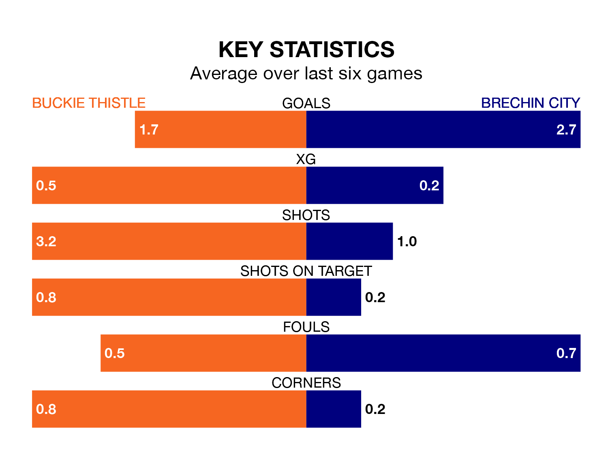

Buckie Thistle host Brechin City in Wednesday's late match at Victoria Park looking to bounce back from defeat last time out in the Highland Football League.
Buckie Thistle, who sit fourth in the league after 26 games, fell to a 3-1 away defeat to Wick Academy on Saturday.
They face a Brechin side who picked up a win in their last match, a 5-1 victory against Turriff United, and who sit first in the table.
With 71 goals in 26 games so far this season, Buckie Thistle are scoring more than average in the league with 2.7 goals per game. And they are conceding fewer than average, letting in 31 goals at a rate of 1.2 per game.
Brechin are also above average scorers, with 2.7 goals per game, compared to a league average of 1.8. They have conceded 0.7 goals per game.
The hosts are in mixed form in the Highland Football League, with three wins and a draw from their last six games.
With four wins and two draws over that period, City's form is better – they have taken 14 points from 18, compared to Buckie Thistle's 10.
In the last five years, Buckie Thistle and Brechin have played each other on four occasions. They won two each.
On average, Buckie Thistle scored 1.5 goals and Brechin 1.5 in those matches.
Their last meeting was on February 17, when Buckie Thistle won 3-2 away.
Updated: 12:16 (UTC), 25/03/24